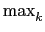
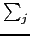

suivant: Norme d'une matrice avec
monter: Les différentes norme d'une
précédent: Norme ld'une matrice
Table des matières
Index
Norme d'une matrice avec la norme des lignes : rownorm rowNorm
rownorm (ou rowNorm) a comme argument une matrice A.
rownorm (ou rowNorm) renvoie
(| aj, k|) si
l'argument est A = aj, k.
On tape :
rownorm([[1,2],[3,-4]])
ou
rowNorm([[1,2],[3,-4]])
On obtient :
7
En effet :
max(1 + 2, 3 + 4) = 7
Documentation de giac écrite par Renée De Graeve